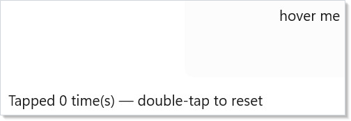
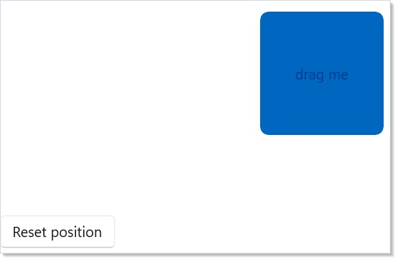
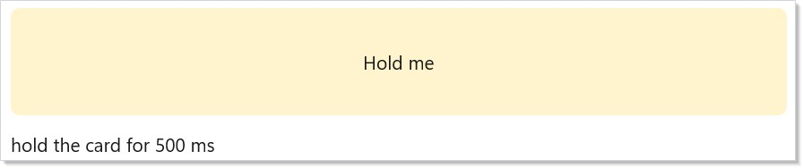
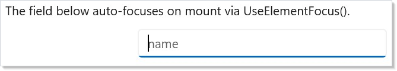
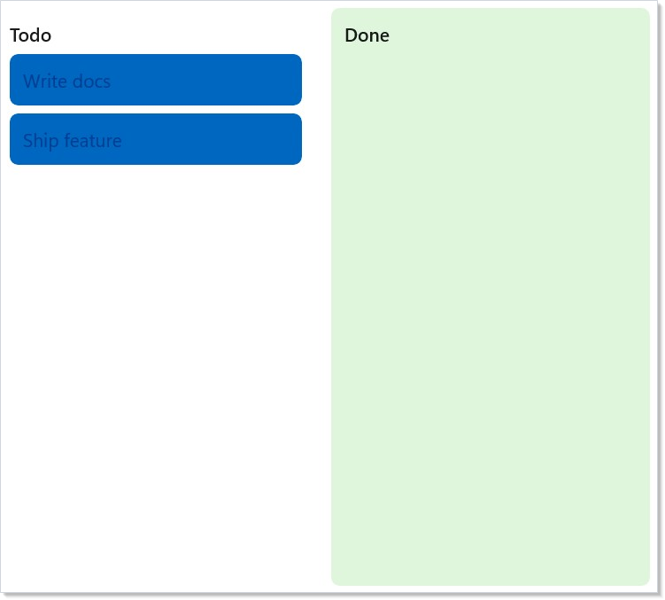

WinUI reference: For the full property surface and design guidance, see Input.
Input flows from raw pointer and keyboard events through Microsoft.UI.Reactor (Reactor)'s
modifier tower into your component's render logic, with gesture
recognizers and focus state stacked on top. The bottom layer is the
raw .OnPointerPressed / .OnKeyDown / .OnGotFocus etc. surface,
which mirrors WinUI's routed events one-to-one and uses bubbling by
default — events start at the deepest element and propagate up the
tree. Above that sit the high-level recognizers: .OnTapped,
.OnDoubleTapped, .OnPan, .OnPinch, .OnRotate, .OnLongPress
— each auto-enables the underlying WinUI flag (e.g.
IsDoubleTapEnabled) and installs a single stable trampoline so
re-rendering with a new handler closure costs no re-subscription.
Focus is the third tower: declarative .TabIndex / .AccessKey /
.IsTabStop modifiers, the UseElementFocus /
UseElementRef hooks for imperative focus, and
UseFocusTrap for modal containment. Everything
is re-render-safe by design; the focus-and-input-internals
page covers the dispatcher and trampoline mechanics for readers who
want the implementation details.
Input and gestures¶
Reactor's input surface is declarative: attach handlers via .On* modifiers and
the reconciler wires WinUI events, auto-enables the matching flags (for example
IsDoubleTapEnabled), and survives re-renders without re-subscribing the
underlying WinUI event.
This page covers the modifiers you'll reach for on most screens, the higher-level gesture recognizers for continuous input, and the imperative escape hatches — ref-based focus and access keys — that round out the commanding story.
Reference¶
| Modifier / hook | Purpose |
|---|---|
.OnPointerPressed / .OnPointerReleased / .OnPointerEntered / .OnPointerExited / .OnPointerMoved |
Raw pointer events. Bubble by default. |
.OnTapped / .OnDoubleTapped / .OnRightTapped / .OnHolding |
High-level tap recognizers. Auto-enable the matching IsXEnabled flag. |
.OnDoubleTap(Action) / .OnDoubleTap(Action<Point>) |
Argument-free convenience overloads of .OnDoubleTapped for when you don't need the routed args. |
.OnPan / .OnPinch / .OnRotate / .OnLongPress |
Continuous-gesture recognizers. Take onBegan / onChanged / onEnded. |
.OnKeyDown / .OnKeyUp / .OnPreviewKeyDown / .OnPreviewKeyUp / .OnCharacterReceived |
Keyboard events. Preview-pair tunnels; the unprefixed pair bubbles. |
.OnGotFocus / .OnLostFocus |
Focus events; bubble by default. |
.OnDragStart<TEl,T> / .OnDrop<TEl,T> / .OnDragOver |
Drag-and-drop sources and targets with typed in-process payloads. |
.TabIndex(n) / .IsTabStop() / .AccessKey("S") / .TabNavigation(...) |
Declarative focus order and keyboard navigation. |
UseElementFocus |
Untyped element ref + dispatcher-scheduled RequestFocus() action. |
UseElementRef<T> |
Typed element ref for calling methods on the underlying control. |
UseFocusTrap |
Keyboard focus trapping for modals and flyouts. |
Pointer, tap, and keyboard modifiers¶
Every component exposes the full WinUI input event surface as
.On* modifiers. Attach a handler; Reactor auto-enables the matching flag and
installs a trampoline so re-renders don't re-subscribe the underlying event.
class PointerModifiersExample : Component
{
public override Element Render()
{
var (hover, setHover) = UseState(false);
var (tapCount, setTapCount) = UseState(0);
return VStack(12,
Border(TextBlock(hover ? "hovered" : "hover me")
.HAlign(HorizontalAlignment.Center).VAlign(VerticalAlignment.Center))
.Width(240).Height(120)
.Background(hover ? Theme.AccentTertiary : Theme.ControlFillSecondary)
.CornerRadius(8)
.IsTabStop(true)
.OnPointerEntered((_, _) => setHover(true))
.OnPointerExited((_, _) => setHover(false))
.OnTapped((_, _) => setTapCount(tapCount + 1))
.OnKeyDown((_, e) =>
{
if (e.Key is VirtualKey.Enter or VirtualKey.Space)
setTapCount(tapCount + 1);
})
.OnDoubleTap(() => setTapCount(0)),
TextBlock($"Tapped {tapCount} time(s) — double-tap to reset")
).Padding(24);
}
}

Auto-enablement keeps handlers honest: attaching .OnDoubleTapped(...) sets
IsDoubleTapEnabled = true on the mounted control so the WinUI event actually
fires. Remove the handler on a later render and the flag goes back to its
default. Shape subclasses (for example Rectangle and Ellipse) also get a
transparent Fill auto-assigned when a pointer handler is attached and no fill
was set — otherwise hit-testing would miss the unfilled shape entirely.
Keyboard events¶
class KeyboardEventsExample : Component
{
public override Element Render()
{
var (value, setValue) = UseState("");
var (log, setLog) = UseState("press Enter to submit");
return VStack(12,
TextBox(value, setValue, placeholderText: "type here").Width(280)
.AutomationName("Text to submit")
// Tunnels first — the right spot to intercept before bubbling.
.OnPreviewKeyDown((_, _) => setLog("preview"))
// Bubbles — fires after the preview pair.
.OnKeyDown((_, e) =>
{
if (e.Key == VirtualKey.Enter)
setLog($"submitted: {value}");
})
.OnCharacterReceived((_, e) => setLog($"typed '{e.Character}'")),
TextBlock(log)
).Padding(24);
}
}
OnPreviewKeyDown / OnPreviewKeyUp map to the WinUI tunneling events and fire
before the bubbling OnKeyDown / OnKeyUp pair, which is the right spot for
shortcut interception that needs to suppress further routing.
Focus events¶
class FocusEventsExample : Component
{
public override Element Render()
{
var (value, setValue) = UseState("");
var (hint, setHint) = UseState("");
return VStack(12,
TextBox(value, setValue, placeholderText: "email").Width(280)
.AutomationName("Email")
.OnGotFocus((_, _) => setHint("We never share your address."))
.OnLostFocus((_, _) => setHint("")),
TextBlock(hint).Foreground(Theme.SecondaryText)
).Padding(24);
}
}
Focus events flow through the same trampoline pattern as pointer events, so the handler closure is updated in-place on each render and the WinUI subscription is installed exactly once per element.
Continuous gestures¶
Pan, pinch, and rotate are continuous gestures: a single user interaction
produces a stream of callbacks with deltas relative to the gesture start. Each
gesture takes an onChanged action plus optional onBegan / onEnded
callbacks that fire exactly once per interaction.
Pan¶
Rectangle()
.OnPan(
onChanged: g => Translate(g.Translation),
onEnded: g => SnapToGrid(g.Translation),
minimumDistance: 8.0,
axis: PanAxis.Both,
withInertia: true);
minimumDistance gates callbacks: until the cumulative translation exceeds the
threshold, nothing dispatches. On first crossing the reconciler emits onBegan
(with Phase = Began) followed by the current delta as Phase = Changed. If
the manipulation completes before the threshold is crossed, neither onBegan
nor onEnded fire.
PanGesture.Translation is cumulative since Began; PanGesture.Delta is
per-callback.
Keep pans at 60 Hz: write Translation directly¶
Reactor's render loop re-enqueues at DispatcherQueuePriority.Low on every
tick so layout and paint aren't starved by back-to-back setState calls. That's
correct for general UI, but it means a per-event setState during pan drops
frames — by the time the Low-priority render drains, several manipulation
events have already piled up. setOffset(offset + g.Delta) would also read a
stale offset closure, compounding the problem.
For smooth 60 Hz panning, grab a ref to the mounted element and write
Translation directly inside onChanged. No reconciler round-trip; the
compositor property update is cheap enough to run on every tick. Only call
setState at gesture end — once per drag, not 60× per second.
class PanGestureExample : Component
{
public override Element Render()
{
// For 60 Hz smooth panning, write directly to the mounted element's
// Translation inside onChanged. Going through setState would queue
// Low-priority re-renders that get starved by the manipulation event
// stream itself, producing a laggy drag. The committedRef holds the
// position at the last gesture end so successive drags accumulate.
// Reset lives on a sibling Button because WinUI suppresses the tap
// recognizer when ManipulationMode ≠ System — .OnDoubleTap on the same
// element as .OnPan wouldn't fire.
var cardRef = UseRef<FrameworkElement?>(null);
var committedRef = UseRef(Vector2.Zero);
var (offset, setOffset) = UseState(Vector2.Zero);
void Reset()
{
committedRef.Current = Vector2.Zero;
setOffset(Vector2.Zero);
if (cardRef.Current is { } fe)
fe.Translation = System.Numerics.Vector3.Zero;
}
return VStack(8,
Border(
Border(TextBlock("drag me")
.HAlign(HorizontalAlignment.Center).VAlign(VerticalAlignment.Center)
.Foreground(Theme.AccentText))
.Width(120).Height(120)
.Background(Theme.Accent)
.CornerRadius(8)
.Translation(offset.X, offset.Y, 0)
.OnMount(fe => cardRef.Current = fe)
.OnPan(
onChanged: g =>
{
var next = committedRef.Current +
new Vector2((float)g.Translation.X, (float)g.Translation.Y);
if (cardRef.Current is { } fe)
fe.Translation = new System.Numerics.Vector3(next.X, next.Y, 0);
},
onEnded: g =>
{
committedRef.Current += new Vector2((float)g.Translation.X, (float)g.Translation.Y);
setOffset(committedRef.Current);
},
withInertia: true)
).Height(260).Background(Theme.CardBackground).CornerRadius(8).Padding(16),
Button("Reset position", Reset)
);
}
}

If the panned position doesn't drive anything else on the screen (no adjacent counter, no snap-to-grid indicator), you can even skip the setState at gesture end and treat the ref as the single source of truth.
Can I combine .OnPan with .OnTapped / .OnDoubleTapped on the same element?¶
Not reliably. WinUI suppresses the tap, double-tap, right-tap, and hold
recognizers whenever ManipulationMode is set to anything other than System
— adding .OnPan (or .OnPinch / .OnRotate) flips the mode to the
specific gesture bits, so taps stop firing on the same element. If you need
"drag, but also click to reset," put the click target on a separate sibling
(a Reset button, an overlay, a parent Border) rather than the drag surface
itself.
axis: PanAxis.Horizontal restricts to X-axis translation; withInertia: true
adds the inertia flag so WinUI continues to emit callbacks after the pointer
lifts.
Pinch and rotate¶
Image(imageUrl)
.AutomationName("Photo preview")
.OnPinch(
onChanged: g => Scale(g.Scale),
withInertia: true)
.OnRotate(
onChanged: g => Rotate(g.Angle));
Both gestures share the same Phase lifecycle as pan. ScaleDelta and
AngleDelta report the per-callback delta; Scale and Angle are cumulative
since Began. Combining gestures on one element is expected — the reconciler
unions the required ManipulationModes flags.
Long press¶
class LongPressExample : Component
{
public override Element Render()
{
var (log, setLog) = UseState("hold the card for 500 ms");
return VStack(12,
Border(TextBlock("Hold me")
.HAlign(HorizontalAlignment.Center).VAlign(VerticalAlignment.Center))
.Height(80).Background(Theme.SystemCautionBackground).CornerRadius(6).Padding(12)
.OnLongPress(
g => setLog($"long-press after {g.Duration.TotalMilliseconds:F0}ms"),
enableMouseEmulation: true),
TextBlock(log)
).Padding(24);
}
}

Long-press is touch-and-pen first: the reconciler routes Holding events into
the callback and sets IsHoldingEnabled = true. Mouse long-press is off by
default because WinUI's Holding event doesn't fire for mouse pointers; opt in
with enableMouseEmulation: true and the reconciler arms a DispatcherTimer
that cancels on release, capture loss, or pointer motion past cancelDistance.
Focus and access keys¶
Declarative focus modifiers¶
class FocusModifiersExample : Component
{
public override Element Render() => VStack(12,
// Declarative focus order + an access key (Alt+S) on the primary action.
Button("Submit", () => { })
.TabIndex(3)
.AccessKey("S")
.IsTabStop(), // default-true overload
// Advanced focus knobs are first-class too.
VStack(8,
Button("One", () => { }),
Button("Two", () => { }))
.TabNavigation(KeyboardNavigationMode.Once)
.XYFocusKeyboardNavigation(XYFocusKeyboardNavigationMode.Enabled)
).Padding(24);
}
AccessKey bound on a .Command(...) can be overridden per-site: a later
.AccessKey(...) wins via the normal modifier-after-command ordering.
class CommandAccessKeyExample : Component
{
public override Element Render()
{
var save = new Command { Label = "Save", Execute = () => { }, AccessKey = "S" };
// A later .AccessKey(...) wins over the one carried by the Command.
return Button(save).AccessKey("F").Padding(24);
}
}
Imperative focus with refs¶
Sometimes you need to focus a control from an effect or event handler — for
example, auto-focusing the first input on mount. Use UseElementFocus to get a
stable ElementRef plus a RequestFocus action that schedules the focus on the
UI dispatcher so it runs after the current reconcile pass.
class UseElementFocusExample : Component
{
public override Element Render()
{
var (name, setName) = UseState("");
var (inputRef, requestFocus) = this.UseElementFocus();
UseEffect(() => requestFocus(), Array.Empty<object>());
return VStack(12,
TextBlock("The field below auto-focuses on mount via UseElementFocus()."),
TextBox(name, setName, placeholderText: "name").Width(280)
.AutomationName("Name")
.Ref(inputRef)
).Padding(24);
}
}

ElementRef.Current is null until the referenced element mounts; the ref
survives re-renders so the same instance reliably points at the currently
mounted control. Call Microsoft.UI.Reactor.Input.FocusManager.Focus(ref) for
a synchronous focus attempt or FocusManager.FocusAsync(ref) for WinUI's
async API with a success result.
Typed refs¶
When you actually need to call methods on the underlying control (e.g.
SelectAll() on a TextBox, Focus(FocusState.Programmatic) on a Button),
use UseElementRef<T>() instead. It gives you an ElementRef<T> whose
.Current is already typed as T — no as TextBox cast at the call site.
It is an extension method on Component (and on RenderContext), so call it
as this.UseElementRef<T>() from inside Render():
class SearchBoxExample : Component
{
public override Element Render()
{
var (query, setQuery) = UseState("");
// ElementRef<T>.Current is already typed — no `as TextBox` at the call site.
var inputRef = this.UseElementRef<TextBox>();
UseEffect(() => inputRef.Current?.SelectAll(), Array.Empty<object>());
return VStack(12,
TextBlock("Text is pre-selected on mount via UseElementRef<TextBox>()."),
TextBox(query, setQuery).Width(280)
.AutomationName("Search query")
.Ref(inputRef)
).Padding(24);
}
}
The constraint T : FrameworkElement keeps the ref type-checked. In DEBUG
builds Reactor asserts the actual mounted element is a T; in release the
mismatch is silent and .Current returns null.
Behind the scenes: trampoline dispatch¶
Re-rendering an element with a fresh handler closure is the common case in a data-driven UI. Naively subscribing / unsubscribing on every render costs a COM round-trip per event per element — enough to dominate a 1,000-item list's frame budget. Reactor installs one stable trampoline delegate per event per element and updates a mutable field that the trampoline reads. Re-renders swap the field; the WinUI subscription is untouched.
You don't opt in or configure this — every .On* modifier routes through the
trampoline path automatically. Inspect the
devtools ETW EventDispatch keyword (0x40) to see exactly
when each trampoline attaches and dispatches.
Migration from .Set(...) passthrough¶
Pre-Tier-1 code often reaches through .Set(...) to subscribe to an event that
the element type didn't model declaratively:
// Before — escapes the declarative surface and bypasses trampoline dispatch.
Rectangle().Set(r =>
{
r.PointerEntered += (_, _) => Hover();
r.PointerExited += (_, _) => Unhover();
});
After Tier 1 lands, every pointer, tap, keyboard, and focus event has a
first-class modifier. Replace the .Set(...) block with one modifier call per
event — shorter, re-render-safe, and covered by the reconciler's auto-enable
logic:
Drag and drop¶
Reactor's DnD surface is a declarative wrapper over the full Windows drag-and-drop
protocol (CanDrag sources, AllowDrop targets, DragStarting / Drop /
DropCompleted, DataPackage with text / URI / HTML / RTF / files / bitmap /
custom formats, DragUIOverride drop-indicator tweaks). Sources and targets
auto-wire the underlying flags — you set a modifier, the reconciler flips the
bit and subscribes once via the same trampoline path every other event uses.
Typed in-process payloads¶
For reorder-within-one-app scenarios (kanban columns, sortable lists), attach a
typed payload on the source and a matching typed drop handler on the target.
The payload is ferried through an in-memory transfer registry keyed by a GUID
written into DataPackage.Properties, so arbitrary CLR objects can round-trip
without a serializer.
sealed record KanbanCard(string Id, string Title);
class KanbanDndExample : Component
{
public override Element Render()
{
var initialTodo = UseMemo(() => new KanbanCard[]
{
new("k1", "Write docs"),
new("k2", "Ship feature"),
}, Array.Empty<object>());
var (todo, setTodo) = UseState<IReadOnlyList<KanbanCard>>(initialTodo);
var (done, setDone) = UseState<IReadOnlyList<KanbanCard>>(Array.Empty<KanbanCard>());
Element Column(string label,
IReadOnlyList<KanbanCard> cards,
Action<IReadOnlyList<KanbanCard>> setThis)
{
var children = new List<Element> { TextBlock(label).SemiBold() };
foreach (var card in cards)
{
var captured = card;
children.Add(
Border(TextBlock(captured.Title).Foreground(Theme.AccentText))
.Background(Theme.Accent).CornerRadius(6).Padding(10)
.OnDragStart<BorderElement, KanbanCard>(
getPayload: () => captured,
allowedOperations: DragOperations.Move,
onEnd: ctx =>
{
if (!ctx.WasCancelled && ctx.CompletedOperation == DragOperations.Move)
setThis(cards.Where(c => c.Id != captured.Id).ToList());
}));
}
return VStack(6, children.ToArray())
.OnDrop<StackElement, KanbanCard>(
onDrop: c =>
{
if (!cards.Any(x => x.Id == c.Id))
setThis(cards.Append(c).ToList());
},
acceptedOps: DragOperations.Move);
}
return HStack(12,
Border(Column("Todo", todo, setTodo))
.Width(240).Background(Theme.CardBackground).CornerRadius(6).Padding(10),
Border(Column("Done", done, setDone))
.Width(240).Background(Theme.SystemSuccessBackground).CornerRadius(6).Padding(10)
).Padding(24);
}
}

Standard formats + cross-process interop¶
Eager setters (.WithText, .WithUri, .WithHtml, .WithRtf, .WithFiles,
.WithBitmap, .WithCustomFormat) write directly to the DataPackage, so
Notepad / Word / File Explorer pick the drop up natively. On the target side,
TryGetText(out string) and GetTextAsync(CancellationToken) work the same
whether the drag originated from the same process or a different one.
Border(TextBlock("Drag me to Notepad"))
.OnDragStart<BorderElement>(() => new DragData().WithText("hello world"));
Rectangle()
.OnDrop<RectangleElement>(args =>
{
if (args.Data.TryGetText(out var text))
Log(text);
args.AcceptedOperation = DragOperations.Copy;
});
Lazy providers — pay only when the target asks¶
If producing the payload is expensive (rendering HTML from a view model,
reading a large file, round-tripping through a server), register a provider
instead of an eager value. Reactor adapts your Func<T> or
Func<CancellationToken, Task<T>> onto WinUI's DataProviderHandler: the
deferral is acquired, your code runs on the thread pool, and the result is
published when the target requests that format. A target that only reads text
never pays the HTML cost.
Border(TextBlock("Rich content"))
.OnDragStart<BorderElement>(() => new DragData()
.WithText("plain fallback")
.WithHtml(ct => RenderExpensiveHtmlAsync(ct)));
Drop indicator overrides¶
Drop-over callbacks can tweak the caption, glyph, and content-preview
visibility via DragTargetArgs.UIOverride — Reactor writes the changes back
onto WinUI's DragUIOverride after your callback returns.
VStack(children.ToArray())
.OnDragOver(args =>
{
args.UIOverride.Caption = "Move to Inbox";
args.UIOverride.IsGlyphVisible = false;
args.AcceptedOperation = DragOperations.Move;
})
.OnDrop<StackElement, Card>(card => inbox.Add(card));
VStack(...) and HStack(...) both produce a StackElement, so that is
the element type argument to use on the typed .OnDrop<TEl, T> overload.
Dropped files: prefer TryGetSafeLocalFiles¶
A cross-process file drop is attacker-influenced input. TryGetFiles hands
back whatever the source offered — including UNC paths, reparse points, and
virtual (non-filesystem) shell items that can redirect a later read off the
local machine. TryGetSafeLocalFiles applies that filter for you and returns
only real local-filesystem items.
Border(TextBlock("Drop files here"))
.OnDrop<BorderElement>(args =>
{
if (args.Data.TryGetSafeLocalFiles(out var files))
Import(files);
args.AcceptedOperation = DragOperations.Copy;
});
The REACTOR_INPUT_002 analyzer flags TryGetFiles inside an .OnDrop
handler and suggests the safe variant.
The move-on-confirmation pattern¶
When a source declares DragOperations.Move, the source is responsible for
removing the moved item — but only after the drop is confirmed. Never remove
optimistically in getPayload: the user might cancel (ESC), the drop might
land outside any target, or a Ctrl-drag might downgrade Move to Copy. Wait for
onEnd and branch on CompletedOperation:
Border(TextBlock(card.Title))
.OnDragStart<BorderElement, Card>(
getPayload: () => card,
allowedOperations: DragOperations.Move | DragOperations.Copy,
onEnd: ctx =>
{
if (ctx.WasCancelled) return;
if (ctx.CompletedOperation == DragOperations.Move)
column.Remove(card); // confirmed move — safe to remove
// else: Copy succeeded, source keeps the item
});
DragEndContext.WasCancelled is true when the drop fell outside every valid
target (ESC, dropped on empty space, system abort).
DragEndContext.CompletedOperation carries the final negotiated operation
— whatever the target set via DragTargetArgs.AcceptedOperation — or
DragOperations.None when cancelled.
Caveat:
.OnPointerPressedon a parent fires after its children when using the default bubbling phase — Reactor mirrors WinUI's routed-event model, where events start at the deepest hit-tested element and propagate up. There is no.On<Event>Handled(...)"handled-too" overload on the modifier surface: every.On*modifier subscribes through the normal bubbling path and stops once a child marks the event handled. If a parent must see the press regardless, you have two options: (1) attach to the preview/tunnel pair (.OnPreviewKeyDown/.OnPreviewKeyUpfor keys — for pointer events there is no preview pair); (2) drop down to the manualAddHandler(PointerPressedEvent, handler, handledEventsToo: true)via.Set(c => ...), which is what the reconciler itself uses internally for gestures and drag-and-drop. The trap: relying on tunneling for pointer capture silently does the wrong thing in 80% of cases because the tunnel pair doesn't exist for pointer events. The focus-and-input-internals page walks the routed-event phases end-to-end.
Patterns¶
Drag-reorder a list¶
Combine .OnDragStart<TEl, T> on each item with .OnDrop<TEl, T> on the
list container. The kanban example above is the canonical shape — typed
payload, GUID transfer registry, move-on-confirmation. For a
recipe-style walkthrough with full state management and animation,
see recipes/drag-reorder.
Pinch-to-zoom on an image¶
Combine .OnPinch with the element's Scale compositor property driven from
state. Scale is cumulative since Began — apply it directly in onChanged for 60 Hz
behavior (same pattern as pan above), then commit to UseState in
onEnded. The reconciler unions ManipulationModes so adding
.OnRotate on the same element is free.
Trap focus inside a modal¶
Wrap the modal's content tree in a container with
.FocusTrap(handle) where the handle comes from
UseFocusTrap(isActive). Tab and Shift+Tab cycle
within the trap; the modal's close handler flips isActive to false,
which lifts the trap and returns focus to the previously-focused
element. The accessibility page covers the
full ARIA dialog shape (announcement, restore-focus-on-close,
aria-labelledby via AutomationName).
Common Mistakes¶
Relying on tunneling for pointer capture¶
Reactor exposes pointer events through the bubbling phase only —
there is no .OnPreviewPointerPressed / .OnPreviewPointerReleased
modifier because WinUI's routed-event surface for pointer events
doesn't expose a tunneling pair the same way it does for keyboard.
If a parent needs to see the press before children consume it, drop
down to .Set(c => c.AddHandler(PointerPressedEvent, handler,
handledEventsToo: true)) — there is no handled-too overload on the
.On* modifiers themselves. The
caveat above goes into the routing detail.
Using .OnKeyDown for accelerator chords¶
.OnKeyDown fires per element on focus — a Ctrl+S handler attached
to a TextBox only fires while that field has focus. For app-wide
accelerators (Save, Find, Run), use Reactor's
commanding system: new Command { ..., Accelerator =
Accelerator(VirtualKey.S, VirtualKeyModifiers.Control) } registers
the chord with the WinUI accelerator infrastructure, which routes
through the window's AccessKeyManager regardless of focus. The
analyzer REACTOR_INPUT_001 flags Ctrl/Alt key combinations attached
via .OnKeyDown and suggests the Command rewrite.
Forgetting .IsTabStop(true) on a clickable Border¶
A Border with .OnTapped(...) is hit-testable for pointer events
but is not in the keyboard tab order by default — pressing Tab skips
right past it, which fails accessibility (every
interactive control must be keyboard-reachable). Add .IsTabStop(true)
to put the Border in the tab order — a plain .TabIndex(n) is not
enough, because the reconciler applies TabIndex only to focusable
Controls, not to a Border — and pair it with .OnKeyDown for
Enter/Space activation. The Roslyn analyzer
REACTOR_A11Y_004 flags this at build time.
Note that the runtime AccessibilityScanner does
not have a matching keyboard-reachability rule (its rules are
A11Y_001–A11Y_008), so the build-time analyzer is the only
automated guard for this one.
Tips¶
Use the high-level recognizer when one exists. .OnTapped is
the right primitive for click — it filters out drags, handles
touch and mouse uniformly, and respects the system's tap-distance
threshold. Reach for .OnPointerPressed only when you need the
raw event (preview, capture, multi-touch coordination).
Write Translation directly during pan. A per-event setState
during pan drops frames — Reactor's render loop priorities lose to
the manipulation event stream. Grab a ref to the mounted element
and write Translation inside onChanged; commit to state once on
onEnded. The pan snippet above is the canonical shape.
Long-press needs enableMouseEmulation: true for mouse users.
WinUI's Holding event doesn't fire for mouse pointers by design.
If your context-menu trigger needs mouse support (most do), opt in
explicitly. Touch and pen work without it.
Bridge to Command for anything keyboard-shortcut-shaped.
Per-element .OnKeyDown handlers are right for "Enter submits this
form"; app-wide chords belong on a Command with an
Accelerator = Accelerator(VirtualKey.S, VirtualKeyModifiers.Control).
Command.AccessKey is the separate Alt-key mnemonic, not the chord.
See commanding for the full surface.
Run the a11y scanner. A keyboard-focusable interactive control
without AutomationName or a focus-visible affordance is a bug.
AccessibilityScanner flags both at runtime.
Next Steps¶
- Focus and Input Internals — under-the-hood: trampoline dispatch, routed-event phases, dispatcher coalescing for focus
- Accessibility —
UseFocusTrap,UseAnnounce,AccessibilityScanner, ARIA patterns - Commanding — app-wide accelerators, command bars, the
CommandandCommand<T>types - Animation — pairing gestures with
.InteractionStates()for hover / press / focus visuals - recipes/drag-reorder — full drag-to-reorder list recipe
- Components — previous topic: components, props, and composition